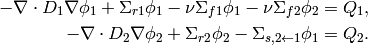
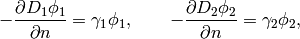

2-Group Neutronics (Neutronics)¶
Git reference: Benchmark neutronics-2-group-adapt.
This benchmark uses automatic adaptivity to solve a system of weakly coupled elliptic PDEs describing diffusion of neutrons through given medium. It employs the simple (yet often used in practice) two-group approximation by which all neutrons are divided into two distinct groups according to their energy (speed). This leads to the system of two equations shown below.
Equations solved:
(1)
For physical meaning of the various material parameters, see the example 4-Group Neutronics. Their numerical values for this benchmark will be given below.
Domain of interest:
Piecewise constant material properties for the four regions of the domain (reactor core) and each energy group are specified by the following code:
const double D[4][2] = { {1.12, 0.6},
{1.2, 0.5},
{1.35, 0.8},
{1.3, 0.9} };
const double Sr[4][2] = { {0.011, 0.13},
{0.09, 0.15},
{0.035, 0.25},
{0.04, 0.35} };
const double nSf[4][2]= { {0.0025, 0.15},
{0.0, 0.0},
{0.0011, 0.1},
{0.004, 0.25} };
const double chi[4][2]= { {1, 0},
{1, 0},
{1, 0},
{1, 0} };
const double Ss[4][2][2] = {
{ { 0.0, 0.0 },
{ 0.05, 0.0 } },
{ { 0.0, 0.0 },
{ 0.08, 0.0 } },
{ { 0.0, 0.0 },
{ 0.025, 0.0 } },
{ { 0.0, 0.0 },
{ 0.014, 0.0 } }
};
Boundary conditions: Typical conditions for nuclear reactor core calculations are used:
- zero Neumann on left and top edge (axes of symmetry),
- zero Dirichlet on bottom edge (neutron-inert medium around the reactor core),
- Newton condition on right edge (neutron-reflecting medium around the core):

where the reflector albedo  is given by the exact solution and is equal for both groups to 8.
is given by the exact solution and is equal for both groups to 8.
Exact solution: Quite complicated, see the code below.
static double exact_flux1(double x, double y, double& dx, double& dy)
{
double em4x2 = exp(-4*sqr(x));
dx = 2.0*em4x2*x*y*(y-2);
dy = -0.5*em4x2*(y-1);
return em4x2*(y/2.-sqr(y/2.));
}
static double exact_flux2(double x, double y, double& dx, double& dy)
{
double em4x2 = exp(-4*sqr(x));
dx = 0.1*em4x2*y*(y-2)*(2*x+(2*x*sqr(sin(4*M_PI*x))-M_PI*sin(8*M_PI*x))*sqr(sin(4*M_PI*y)));
dy = 0.05*em4x2*(1-y+sqr(sin(4*M_PI*x))*(-(y-1)*sqr(sin(4*M_PI*y))-2*M_PI*y*(y-2)*sin(8*M_PI*y)));
return em4x2*(y/2.-sqr(y/2.)) * (1 + sqr(sin(4*M_PI*x)) * sqr(sin(4*M_PI*y))) / 10.0;
}
Right-hand side: Obtained by inserting the exact solution into the equation. The corresponding code snippet is shown below:
double Q1(double x, double y)
{
int q = get_material(x,y);
double exfl1 = exp(-4*sqr(x))*(y/2.-sqr(y/2.));
double exfl2 = exfl1 * (1 + sqr(sin(4*M_PI*x)) * sqr(sin(4*M_PI*y))) / 10.0;
double L = 0.5*exp(-4*sqr(x))*(1+4*(8*sqr(x)-1)*y*(y-2))*D[q][0];
return L + Sr[q][0]*exfl1 - chi[q][0]*nSf[q][0]*exfl1 - chi[q][1]*nSf[q][1]*exfl2;
}
double Q2(double x, double y)
{
int q = get_material(x,y);
double yym2 = (y-2)*y;
double pi2 = sqr(M_PI), x2 = sqr(x), pix = M_PI*x, piy = M_PI*y;
double cy2 = sqr(cos(4*piy)),
sy2 = sqr(sin(4*piy)),
sx2 = sqr(sin(4*pix)),
em4x2 = exp(-4*x2);
double exfl1 = em4x2*(y/2.-sqr(y/2.));
double exfl2 = exfl1 * (1 + sx2 * sy2) / 10.0;
double L = 1./20.*em4x2*D[q][1]*(
1+4*(8*x2-1)*yym2+16*pi2*yym2*cy2*sx2 + 0.5*sy2*(1-4*(1+4*pi2-8*x2)*yym2 +
(4*(1+12*pi2-8*x2)*yym2-1)*cos(8*pix) - 64*pix*yym2*sin(8*pix)) + 8*M_PI*(y-1)*sx2*sin(8*piy) );
return L + Sr[q][1]*exfl2 - Ss[q][1][0]*exfl1;
}
where the function get_material is used to obtain the material marker given the physical coordinates (see
main.cpp).
The following picture shows the two right-hand side functions (distribution of neutron sources/sinks) -  is plotted on the left,
is plotted on the left,  on the right.
on the right.

Weak formulation of the present two-group neutron diffusion problem with fixed source terms may be derived from the general multigroup formulation shown in the 4-Group Neutronics example. Concerning its implementation (see the file forms.cpp), it is worth noticing that we manually define a higher integration order for the volumetric linear forms to correctly integrate the non-polynomial source terms, although we may set it lower for the group-1 equations than for the group-2 equations as is much smoother than :
Ord liform_0_ord(int n, double *wt, Func<Ord> *u_ext[], Func<Ord> *v, Geom<Ord> *e, ExtData<Ord> *ext)
{
return Ord(20+v->val[0].get_order());
}
Ord liform_1_ord(int n, double *wt, Func<Ord> *u_ext[], Func<Ord> *v, Geom<Ord> *e, ExtData<Ord> *ext)
{
return Ord(30+v->val[0].get_order());
}
The following figures show the computed distributions of neutron flux for both neutron groups.

Notice the largely different behavior of the two solution components, where the first one is quite smooth while the other one more oscillating. It reflects the typical behavior observed in real cases, which arises from the different rate of interactions of fast (1st group) and slow (2nd group) neutrons with surrounding nuclei. This makes multimesh a preferred choice for automatic adaptivity, as can be clearly seen from the first of the series of convergence comparisons presented below.
In each convergence comparison, the reported error is the true approximation error calculated wrt. the exact solution given above and measured in a H1 norm. The calculation was ended when the energy error estimate (often used to guide adaptivity in real multiphysics problems where exact solution is not known) became lower than 0.1%.
Comparison of single/multi-mesh hp-FEM¶
Final mesh (hp-FEM, single-mesh): 2590 DOF, error = 3.46787%

Final mesh (hp-FEM, multi-mesh): 1724 DOF, error = 3.46713%

DOF convergence graphs:

CPU convergence graphs:
Comparison of h-FEM (p=1), h-FEM (p=2) and hp-FEM with h-anisotropic refinements¶
Now, with multimesh enabled, we proceed to compare h-adaptivity with fixed order of approximation with hp-adaptivity. Note that in the first case of linear elements, the calculation had to be ended prematurely because of insufficient memory for reference calculation (the energy error estimate was 1.24495%).
Final mesh (h-FEM, p=1): 31441 DOF, error = 3.69096%

Final mesh (h-FEM, p=2): 27824 DOF, error = 3.46712%
Final mesh (hp-FEM): 1724 DOF, error = 3.46713%
DOF convergence graphs:
CPU convergence graphs:

Comparison of hp-FEM with iso, p-aniso, h-aniso and hp-aniso refinements¶
The solution is almost isotropic in this case and using the generally more expensive anisotropic refinements may not neccessarily result in better meshes (and errors). The possible strategies for capturing anisotropy are compared below. Note that only the p-anisotropic refinements produced better mesh (with a lower number of DOF) than the simple isotropic refinements, but took more time than would be justified for the increase in accuracy.
Final mesh (hp-FEM, isotropic refinements): 1724 DOF, error = 3.46713%
Final mesh (hp-FEM, h-anisotropic refinements): 1768 DOF, error = 3.46731%

Final mesh (hp-FEM, p-anisotropic refinements): 1584 DOF, error = 3.46668%

Final mesh (hp-FEM, hp-anisotropic refinements): 1926 DOF, error = 3.46626%

DOF convergence graphs:

CPU convergence graphs: